Кратко о статье: Вселенная Planescape — это лабиринт безумных измерений, населённых множеством рас, от хвостатых тифлингов до кубов-модронов. Здесь тёмные эльфы Забытых Королевств могут встретиться с драконидами из «Саги о копье» и вампирами Ravenloft. «Мир фантастики» рассказывает о грандиозном замысле и бесславном закате Мультивселенной.
Мир великого колеса
Planescape: Потерянная мультивселенная
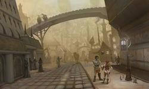
Миры за мирами, мой друг. Столь много неизвестных королевств, далёких земель и недостижимых берегов, что у странника просто захватывает дух. Да, я должен признать это — даже самые пресыщенные из нас были поражены тем, что лежит за бесчисленными дверями.
«За бесчисленными дверями. Книга планов», TSR
В 1994 году издатели ролевых игр TSR и Wizards of the Coast создали новый игровой мир, объединяющий эпический дух Кринна, мистический сумрак Ravenloft и волшебную романтику Забытых Королевств. Здесь тёмные эльфы Фэйруна могли встретиться с обитателями пустынь Dark Sun. Мультивселенная Planescape замышлялась как полное загадок и опасных чудовищ место, которое можно исследовать бесконечно. Вооружённые мечами и двадцатигранными кубиками путешественники могли найти в ней приключения на любой вкус.
Частями Мультивселенной стали как популярные Забытые Королевства и Dragonlance, так и менее известные сеттинги — Мистара, «космический» Спеллджаммер, «арабский» Аль-Квадим и «ацтекская» Мазтика. Помимо старых, привычных миров появились новые, порождённые безумной фантазией разработчика Зеба Кука, с иными законами физики и магии. Здесь воины могли рубиться с гоблинами в условиях невесомости, а жрецы, посещая загробные царства, лично общались со своими богами.
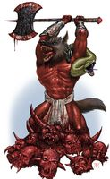
В Планескейпе демон, исповедующий философию Кольцедарителей, может раздать своё имущество бедным, полагая, что за удушение собственной жабы ему начислят опыт
Особенную гордость у разработчиков вызывало то, что на смену изжившей себя системе игровых мировоззрений, которая любые конфликты сводила к формуле «хорошие против плохих», пришла борьба идей и философий. Даже два благородных паладина, служащих Добру и Порядку, могли поразному понимать, что такое «порядок» и «добро».
Космогония мира Planescape получилась необычайно сложной и запутанной, но таила почти безграничные возможности. Основой её стал Прайм — совокупность бесчисленных материальных миров, именуемых «первичными». «Миром», в зависимости от фантазии его создателей, могла считаться как вращающаяся вокруг своего солнца планета, так и плоский диск на спинах трёх слонов. Частью Прайма стали, например, Торил, Кринн и... Земля эпохи раннего Железного века. Благодаря этому в сеттинге нашлось место для божеств не только фэнтезийных, но и реальных пантеонов, как европейских, так и восточных.
Прайм служил границей, на которой чистая идея сталкивалась с невоплощённой материей, придавая ей форму и смысл. Первичную вселенную окружали многочисленные отражения. Планы, именуемые «внутренними», отражали человеческие представления о первоосновах, энергиях и стихиях. «Внешние» же планы, сплетённые из потоков мысли, отражали различные состояния духа. Здесь обитали боги, порождения веры и надежд.
Внутренние планы
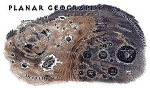
География планов
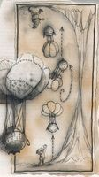
Высочайшие горы слоёв Битопии соприкасаются вершинами, а воздушные шары, переворачиваясь на полпути, достигают «неба» примерно за час
Заклинание. Шаг. И предметы теряют чёткость, краски тускнеют, звуки приглушаются. Это эфир — «транзитивный» план, связывающий Прайм с первоосновами. Невоплощённая протоматерия выглядит как туман. Здесь можно дышать и ходить. Протоматерия очень податлива, и даже неосознанным усилием воли её можно превратить в воздух или опору
Эфир населён. Среди тумана «моря без берегов» снуют гигантские морские коньки, в облаках проплывают лотосы, а железные башни магов служат базами для исследователей демипланов — миниатюрных миров из скоплений протоматерии, недостаточных для воплощения целой планеты. Шагая сквозь туманы эфира, можно найти место, где они переходят в ночной туман мира Ravenloft. Но это — ближний эфир. А в глубине призрачного океана материя разлагается на первоосновы. К традиционным четырём стихиям создатели Planescape прибавили две энергии, лежащие в основе магии AD&D, — Позитивную и Негативную.
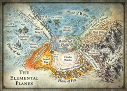
Элементарные планы
Попробуйте вообразить мир, в котором одна из стихий господствовала бы безраздельно. Например, план Воды. Здесь нет ветра и волн, дна и поверхности, так как всё это требует присутствия других первооснов. Этот план — сплошная толща воды, бесконечно простирающаяся в трёх измерениях. Причём вода здесь необычная: на самом деле это идея воды. Повсюду пронизанная светом (хотя солнца на плане нет), она одинаково подходит для пресноводных и морских, мелководных и глубоководных рыб — так как гравитации и давления нет тоже. Даже киты, дышащие воздухом, могут безбоязненно наполнять лёгкие этой жидкостью. Скопления водорослей здесь не всплывают, а коралловые рифы не тонут, дрейфуя в лазурной толще.
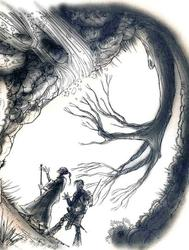
Гравитация на двух первых слоях Пандемониума направлена к стенам, так что ходить можно хоть по «полу», хоть по «потолку»
А вот план Огня: пылающая преисподняя, где затянутые дымом небеса отражают багровое сияние моря лавы, над которым возвышаются базальтовые и обсидиановые скалы. Но в этом измерении хотя бы есть «верх» и «низ». Тогда как план Земли — бесконечный камень. Здесь извилистые тоннели могут вечно тянуться в любом направлении, никогда не выходя к свету. Камень легко поддаётся киркам в руках землекопов и когтям роющих зверей, а измельчённая порода немедленно исчезает — её не нужно выносить на поверхность. Но так же легко исчезает и сам тоннель, затягиваясь со временем. Лишь некоторые полости долговечны, зато размер таких каверн может достигать многих миль.
Генази
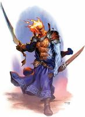
Жизнь на внутренних планах не проходит бесследно. Люди, родившиеся в не предназначенных для человека мирах, часто оказываются «затронутыми». У того, кто родился на плане Огня, вместо волос могут оказаться языки пламени. И магическая защита от жара ему уже не нужна. А выходцы с плана Воды умеют обходиться без воздуха. Таких мутантов в Planescape именуют «генази».
Наконец, Воздух — страна джиннов. Не знающий ночи мир пронзительной синевы. Мир крылатых существ, перепархивающих с одного летающего острова на другой, и сферических морей, парящих среди облаков колоссальными сине-зелёными каплями. Гравитация здесь субъективна. Каждый имеет право падать в направлении, которое считает «низом», а летающие острова застраиваются зданиями со всех сторон.
Лишь измерения Позитивной и Негативной энергий практически пусты. В яростном сиянии Позитива любое живое существо переполнится жизненными силами и взорвётся в считанные минуты. Концентрированная же Негативная энергия, питающая нежить и заклинания некромантии, мгновенно убивает не только всё живое, но и всё мёртвое.
Стихийные планы умудряются граничить друг с другом, причём каждая из границ становится отдельным миром. Например, Воздух, встречаясь с Водой, рождает мир льда, а Огонь по мере приближения к Позитиву превращается в мир чистого Света. Перечислить все комбинации здесь просто не хватит места.
Внешние Планы
С Внешними планами Прайм связывает Астральное море — заполненная серебристым сиянием пустота, где нет ни времени, ни расстояний. Астральный план не пространство, а состояние разума. Перемещаться, минуя редкие островки материи — окаменевшие тела мёртвых богов и заброшенные с других планов скалы, на которых возведены города Астрала, — здесь можно только усилием мысли.
Образы, порождаемые верой разумных существ, в Астрале накладываются друг на друга, формируя из пустоты миры, где воплощены представления о загробных царствах. Согласно теологии Planescape, после смерти души возрождаются в измерении, соответствующем их мировоззрению и прижизненным заслугам. В качестве «просителя» (petitioner) утративший память грешник или праведник проживает ещё одну или даже несколько жизней, пока не достигнет полной гармонии с новым миром и не станет его частью: зверем в лесу, шорохом листы, завыванием ветра. Или демоном.
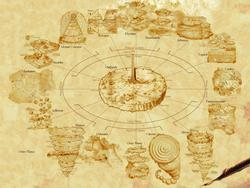
Карта великого колеса
Шестнадцать не похожих друг на друга миров слагают обод Великого Колеса Мультивселенной. Это странные измерения, в которых привычные законы физики не действуют. Например, Механус, обитель чистого Порядка, не замутнённого примесью Добра или Зла, — скопление вращающихся в разных плоскостях металлических шестерней. Некоторые из зубчатых колёс достигают размеров континента, а хитрая гравитация позволяет строить города на любой плоской поверхности. Смещаясь по Великому Колесу в сторону Добра, мы попадём на Аркадию, где деревья растут ровными рядами, а холмы имеют правильную геометрическую форму. Страна эта обладает уникальным для Planescape качеством: она ужасно скучна.
Целестия, план Добра и Порядка — поднимающаяся над морем святой воды гора, склоны которой населены ангелами-архонами. Пик пронзает семь небес: усыпанное звёздами серебряное, сияющее золотое, лучащееся мягким светом жемчужное, янтарное, платиновое... Ещё выше простирается сверкающее самоцветное небо, за которым открывается небо озарённое. Из чего оно состоит — неизвестно. Но есть мнение, что из радия. Ибо даже ангелы не возвращаются с последнего слоя Целестии.
Но и озарённое небо — ерунда в сравнении с небом Битопии. По мнению TSR, гномы представляют свой рай состоящим из двух слоёв («подпланов»), расположенных так, что один служит небесами другого. Расстояние между ними невелико: ночами над головой можно увидеть огни городов, расположенных на соседнем слое. Рай лесных эльфов и друидов — Звериные Земли, мир лесов, где землю заменяют сплетенья корней, а кроны вечного леса ярус за ярусом поднимаются к самому небу. Деревья так велики, что энты живут в их ветвях, словно белки. Все звери и птицы вселенной встречаются здесь.
Гора Олимп возвышается на Арборее — мире свободы и необузданных страстей, где леса густы, горы остры, а погода сурова и переменчива. Можно представить, с каким недоумением олимпийцы взирают на эльфийских богов, также облюбовавших этот план. Германский же пантеон обитает в Асгарде — мире каменных рек, текущих, сталкиваясь и сотрясаясь, сквозь бушующие ветра. Словно подчёркивая, что Порядка на этом плане нет и быть не может, пещеры нижнего слоя Асгарда населяют тёмные эльфы... доброго мировоззрения.
На противоположенной стороне от Механуса находится Лимбо – план чистого Хаоса. Гравитация здесь субъективна, как на плане Воздуха, но падать следует с оглядкой: план богат «островками стабильности», на которых возвышаются целые города. Оглушающий, сводящий с ума ураган бушует в пещерах Пандемониума. Этот план лишён поверхности и состоит из полостей в чёрном, поглощающем свет и тепло камне. В этом «мире наизнанку» гравитация направлена к стенам. Чем глубже, тем уже становятся ходы, пока, наконец, лабиринт не сменяется системой изолированных пустот, а завывание ветра — тишиной могилы.
 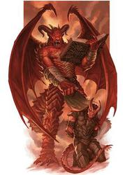
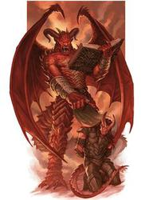
Живущие в Бездне хаотично-злые демоны танар’ри ведут с дьяволами-баатезу бесконечную Войну Крови
Невозможно описать все слои Бездны — царства Хаоса и Зла, вотчины демонов танар’ри. Даже самим разработчикам это не удалось. Ведь слоёв на этом плане 666. С верхнего, Равнины Бесконечных Порталов (выжженной пустоши, покрытой озёрами расплавленного железа), можно попасть, например, на 89-й слой — в Море Теней, управляемое лавкрафтовским Дагоном, которое имеет дно, зато лишено поверхности. Или на 303-й — Сульфанорум, заполненный сернистыми испарениями настолько, что дышать можно только возле колоний местных червей, выделяющих кислород. Или на 503-й — Торремор, в бесконечную систему колонн, лестниц и перекладин.
Ещё более странное место — Карцери, хоровод населённых грешниками сфер. Гравитация здесь исчезает на небольшой высоте, а между «минипланетами» есть воздух, так что с одной на другую можно перелететь на воздушном змее. Не менее удивительный план — Геенна, состоящая из четырёх вулканов-слоёв. Сила тяжести здесь направлена под углом к поверхности, а значит, ровных мест на Геенне нет. Всюду проносятся потоки лавы и камнепады. Ахерон — серая пустота, наполненная беспорядочно летающими и сталкивающимися каменными кубами, на гранях которых расположены крепости и казармы орков и гоблинов. Высшей силы Зло достигает на Серых Пустошах, в тусклом, лишённом красок мире. Здесь не заживают раны, а душу путника снедает апатия, рассеять которую не помогает даже вой монстров во мгле. Кельтское, греческое и германское царства мёртвых занимают три слоя этого плана.
Есть среди миров Planescape и ад классический — Баатор, населённый дьяволами-баатезу. Девять кругов Баатора заимствованы из сочинений Данте.
Почти каждый из планов бесконечно велик, но время пути между любыми его пунктами исчисляется лишь днями. Ведь рождённые воображением жителей Прайма миры реальны лишь условно. География здесь непостоянна. Расстояние до цели зависит от того, насколько ясно путешественник себе её представляет.
Сигил
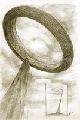
Снаружи Сигил никто не видел. Измерения, проведённые изнутри, показали, что ширина кольца — 5 миль, а диаметр — 7 миль
Ступицу Великого Колеса образуют Внешние Земли. Здесь расположены 16 городов, и каждый связан с одним из измерений «обода» порталом. В центре же Внешних Земель возвышается Шпиль — бесконечной высоты колонна. Мировая ось.
Для планарных путешествий требуется удобная база. И ей стал Сигил — Город Дверей, который выглядит как открытый изнутри тор (кольцо), висящий над вершиной Шпиля. Откуда у бесконечной колонны вершина — тайна. Но в Мультивселенной и не такое случается.
Тифлинги и аасимары
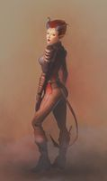
В поселениях на нижних планах рождаются тифлинги, потомки людей или эльфов, обладающие чертами демонов: небольшими рожками, хвостами, крыльями или копытами. Или всем сразу. Немало в Мультивселенной и настоящих метисов с примесью демонической крови. Некоторые виды баатезу и танар’ри настолько человекоподобны, что могут иметь общее потомство с людьми. Аналогично на «добрых» планах появляются аасимары с «ангельскими» чертами. Но их намного меньше. Очевидно, небожители не так привлекательны, как демоницы — суккубы и эриннии.
Под особенности планов подстраивается и мировоззрение. Тифлинги часто отличаются скверным характером. Ведь каждый считает себя демонической личностью и обижается, когда на него не обращают внимания. А кому нужны полукровки там, где на каждом шагу встречаются настоящие демоны и ангелы?
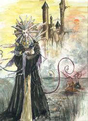
Госпожа Боли, загадочная правительница Сигила, обладающая в пределах города божественной властью
Застроена и населена внутренняя поверхность тора. Задрав головы, местные жители видят улицы на противоположной стороне, если этому не мешают моросящий дождь, удушливый смог или непроницаемый туман. Атмосферные осадки в Сигиле такая же загадка, как и тусклое дневное освещение, ведь солнца и неба город лишён. Город Дверей — мрачное место с узкими извилистыми улочками и высокими серыми домами, стены которых покрыты копотью, окна защищены железными решётками, а крыши украшены острыми шпилями. Под фундаментами скрыты кишащие крысами и нежитью коллекторы, некрополи, катакомбы, уходящие на неведомую глубину. Прокопать оболочку тора насквозь ещё никому не удавалось.
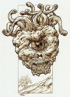
Помимо Астрала и Эфира, в третьей редакции появилось Дальнее Пространство — план за границами Мультивселенной, родина самых диковинных монстров: иллитидов, аболетов, бехолдеров
Этот город — столица измерений. Бесчисленные порталы, большей частью нестабильные и ненадёжные, связывают его с каждым из внешних и внутренних планов, а также со всеми мирами Прайма. Любая дверь, арка, окно или дыра в стене может оказаться порталом, ведущим на план Воды или на слой Бездны, номер которого неизвестен, так как с него ещё никто не возвращался. Но перемещает портал не каждого, а того, кому повезёт (или не повезёт) иметь при себе ключ. Ключом же может оказаться что угодно, от сапфира до свежей раны. Так что приключения гражданам Города Дверей обеспечены.
Свыше миллиона существ — минимум по паре каждой твари, какая найдётся в Мультивселенной, — ютятся здесь, сосуществуя более или менее мирно. В Сигиле никого не интересует, ангел ты или демон, орк, эльф или кентавр, — важно лишь, к какой фракции ты принадлежишь.
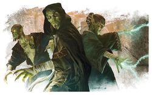
Гитьянки и гитзераи похожи на желтокожих эльфов, истощённых до крайности
Фракция — аналог политической партии, с лидерами («фракторами»), функционерами («фактотумами») и массой сочувствующих («именующихся»), на средства которых содержится аппарат. Но если партии обладают программами, то членов фракции объединяет философия, общее понимание Мультивселенной, представления о добре и зле. Например, члены Гармониума полагают, что высшее благо заключается в строгом порядке и послушании. В рядах этой фракции можно встретить как паладинов из праймовых миров, так и жестоких, но законопослушных дьяволов Баатора. Хранители Праха высшим благом считают смерть, но не физическую, за которой последует перерождение, а истинную: достижение безмятежного покоя, отказ от страстей и желаний. Хаоситекты же уверены, что вселенная есть беспорядок и достичь гармонии с ней можно, лишь умножая хаос. Законники видят смысл существования в познании законов Мультивселенной, а Мрачная Каббала предлагает каждому искать смысл в себе самом. Ведь во вселенной его нет: всё бренно, всё исчезнет. Стражи Судьбы согласны с этой точкой зрения, но полагают смыслом жизни достижение максимальной энтропии.
Всего в Сигиле пятнадцать фракций, каждая из которых отвечает за свои социальные функции. Гармониум берёт на себя работу городской стражи, Законники вершат суд, Хранители хоронят умерших, а Каббала содержит приют для безумных и нищих (хотя и в этом не видит никакого смысла). Ещё два десятка философских «сект» не участвуют в управлении Сигилом, но имеют сильные позиции на планах.
Конфликт фракций — это не только борьба за власть в Городе Дверей. Планы созданы воображением людей, и, объединяя волю, можно изменять их. Если где-то сторонники одной из философий составят большинство, измерение начнёт подстраиваться под их мировоззрение
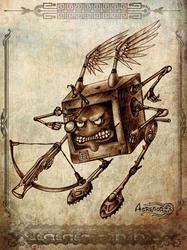
Модроны могут быть не только кубами, но и шарами, и пирамидами, и многогранниками. Чем больше граней, тем выше уровень модрона
Планары и праймеры
Внутренние планы — родина множества существ. Например, на плане Огня рождаются ифриты, саламандры и, само собой, огненные элементали. Джинны родом из плана Воздуха. А из глубин плана Земли в недра праймовых миров проникают плавающие в камне и питающиеся минералами ксорны.
Большую часть населения Внешних планов составляют уже упоминавшиеся покойники-«просители». На Асгарде, в полном соответствии со скандинавской мифологией, возрождаются эйнхерии — бесстрашные воины, которые непрерывно сражаются друг с другом, погибают и воскресают, пока не достигнут полной гармонии с измерением. А, к примеру, просители Звериных Земель выглядят как говорящие животные. Но постепенно они утрачивают навыки человеческой речи, ведь природа говорит с ними на своём языке. Просители Целестии — паломники, восходящие в гору. Они не сольются с планом, пока не пройдут путь совершенства до конца.
Хуже тем, кто плохо вёл себя при жизни и попал в один из видов ада. Бывшие злодеи на Пустошах выглядят как ларвы — утратившие разум черви, ползающие в прахе. Обладатели законно-злого мировоззрения возрождаются на Бааторе в виде лемуров — раздутых груд плоти, снабжённых когтистыми руками. Сторонники хаотичного зла становятся в Бездне примерно так же выглядящими манами.
Цель любого просителя — стать частью плана. Это необязательно означает бесследное растворение и утрату личности. Частью плана являются и существа, представляющие собой элементали того или иного мировоззрения. Крылатые аасимары с Целестии — воплощения законного добра. Населяющие Элизиум гвардиналы, несмотря на пугающие звериные головы, — элементали добра нейтрального. Воплощения хаотичного добра — подобные эльфам «ангелы свободы», эладрины. Истинно нейтральное мировоззрение представляют рилмани с Внешних Земель. Эта раса до такой степени нейтральна, что и сказать о ней нечего: ни то ни сё.
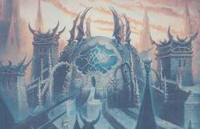
Мортуарий — Сигильский крематорий, оплот и штаб-квартира Хранителей Праха
Цель любого просителя — стать частью плана. Это необязательно означает бесследное растворение и утрату личности. Частью плана являются и существа, представляющие собой элементали того или иного мировоззрения. Крылатые аасимары с Целестии — воплощения законного добра. Населяющие Элизиум гвардиналы, несмотря на пугающие звериные головы, — элементали добра нейтрального. Воплощения хаотичного добра — подобные эльфам «ангелы свободы», эладрины. Истинно нейтральное мировоззрение представляют рилмани с Внешних Земель. Эта раса до такой степени нейтральна, что и сказать о ней нечего: ни то ни сё.
Самые злобные из манов со временем превращаются в демонов хаотичного зла — танар’ри. Набирая силу, меняя обличия и продвигаясь в демонской иерархии, они получают шанс стать владыками одного из слоёв Бездны. Или погибнуть в бесконечной Войне Крови с законно-злыми дьяволами Баатора, в которых превращаются самые сильные из лемуров. Нейтрально-злые юголоты подстрекают обе враждующие стороны, преследуя свои цели. Но будет ошибкой предположить, что юголоты происходят от ларв. Ларвы превращаются в чудовищ Серых Пустошей — многоликих хордлингов, каждый из которых уродлив и чудовищен по-своему. Юголоты же, обитающие на Пустошах, Ахероне и склонах Геенны, берутся неизвестно откуда. Это ещё одна загадка планов.
Порядку служат похожие на роботов модроны, населяющие шестерни Механуса. Этих существ трудно назвать расой, ведь каждое из них — лишь часть сверхорганизма, безукоризненно точно выполняющая свои функции. А воплощения Хаоса — жабовидные слады, живущие в бурлящем Лимбо — супе первоэлементов, где нет ничего постоянного. Новые модроны таинственным образом рождаются в недрах плана-машины, а слады бесхитростно мечут икру. И совсем особняком стоят гехрелеты с Карцери, не определившиеся с мировоззрением.
Planescape: Torment
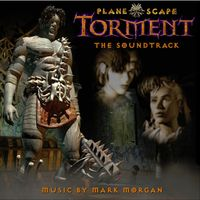
Эту компьютерную ролевую игру справедливо именуют культовой за неподражаемую атмосферу и необычный игровой процесс. Разработчикам из Black Isle Studios пришлось создать не один, а множество миров, по которым герою предстоит пройти, сталкиваясь с добрыми демонами, злыми ангелами, болтливыми черепами, несколькими гранями себя самого, массой аллюзий, аллегорий и философских вопросов.
Игра передаёт дух Planescape. Мультивселенная — не подземелье, которое нужно пройти, убивая монстров и подбирая сокровища. Планы существуют в воображении, и искать на них следует самого себя. Количество диалогов и сюжетных поворотов в игре не просто огромно, оно практически безгранично. Если издать на бумаге хотя бы прямую речь персонажей, она заняла бы дюжину толстых томов.
В Planescape бывают исключения из любых правил. Дьяволам Баатора полагается быть злыми, но некоторые из них встают на сторону Добра. Они занимают места ангелов, дезертировавших в стан Зла, что случается чаще. Бывает, что и модроны обретают собственную волю и начинают искать смысл в одиночном существовании.
В каждом измерении можно встретить одну или несколько уникальных рас, не встречающихся нигде больше. Но непременно найдутся там и выходцы из праймовых миров: люди, эльфы, гномы. Это беглецы, путешественники, торговцы, переселенцы. Наконец, на планах обитают несколько рас, которые пришли откуда-то с Прайма, но давно забыли прежнюю родину. Таковы бариуары — украшенные рожками «барано-кентавры». Свободолюбивая раса облюбовала Асгард, но встретить их можно повсюду в Мультивселенной. Не меньше в ней гитьянки и гитзераев, которые некогда составляли единый народ, находившийся в рабстве у иллитидов. Однажды они восстали и разгромили хозяев, но не сошлись во мнениях, как же лучше добить врага. С тех пор раса распалась на два враждующих рода: гитьянки, воздвигших свои города в серебряной пустоте Астрала, и гитзераев, подчинивших своей воле хаос Лимбо.
Казалось, сеттинг был обречён на успех. Но... Мир Planescape не вдохновил ни игроделов, ни писателей. Он появился всего в паре игр (правда, ставших культовыми) и нескольких книгах — никому не известных. Да и интерес игроков оказался не так уж велик. Перехода на третью редакцию D&D сеттинг не пережил. Космогония Великого Колеса ещё сохранялась, но сердце мира Сигил и его изюминка — фракции — уже не упоминались. В четвёртой редакции о Сигиле вспомнили, безжалостно разжаловав его в рядовой демиплан.
Проработать десятки миров, каждый из которых должен стать полноценной игровой вселенной, оказалось слишком трудно. В Planescape оказалось много пустых планов, где не было ничего интересного, а всё стоящее легко уместилось бы в более популярных мирах. Даже подробно описанные подземные слои с успехом можно было сделать частью фэйруновского Подземья. Наконец, как многие старые сеттинги, формально интегрированные в Planescape, так и многие новые, появившиеся позже, имели свою, не сочетающуюся с Великим Колесом космогонию. Зачастую более простую и удачную.
Что почитать?
- Роберт Кинг «Planescape: Война Крови» (трилогия)
- Джеймс Гарднер «Пламя и пыль»
- Трой Деннинг «Страницы боли»
Во что поиграть?
- Baldur’s Gate (1998)
- Planescape: Torment (1999)